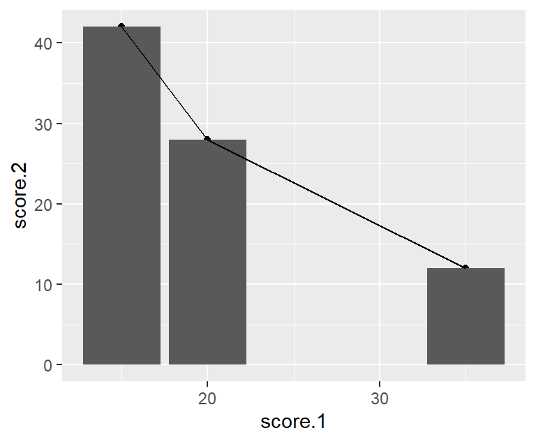
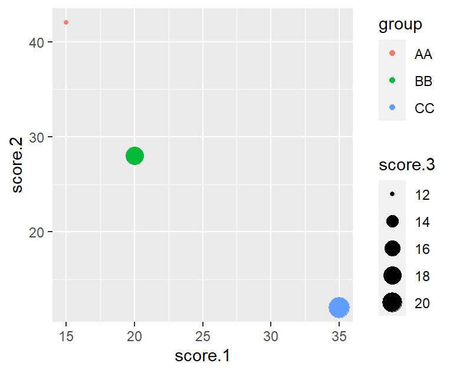

9 Summary
9.1 RMarkdown
With R markdown, it is easy to reproduce not only the analysis used, but also the entire report. The advantage of using R markdown (versus a script) is that you can combine computation with explanation. In other words, you can weave the outputs of your R code, like figures and tables, with text to create a report.
| RMarkdown | R script | |
|---|---|---|
| File extension | .Rmd | .R |
| File contents | R code + Markdown text + YAML header | R code |
| Reproducibility | analysis + entire report | only the analysis |
| Output format | PDF, HTML, Word DOCX | - |
9.2 Advanced data manipulation
| Base R | Tidyverse R | |
|---|---|---|
| Most used function | [] |
%>% |
| Import | ||
| Export | ||
| Inspecting dataset | ||
| Working with factors | ||
| Working with strings | ||
| Working with column names | ||
| Working with row names | ||
| Filtering columns |
|
|
| Filtering rows |
|
|
| Sorting rows |
|
|
| Changing your data | ||
| Summarising data | ||
| Combining datasets | ||
| Reshaping data |
9.3 Modern graphics in R - ggplot2
The grammar of graphics lies at the heart of ggplot2 and also lies at the heart of how we define our data visualizations.1
| Component | Description |
|---|---|
| Data | Raw data that we’d like to visualize |
| Geometries | Shapes that we use to visualize |
| Aesthetics | Properties of geometries (size, color etc.) |
| Mapping | Mapping between data and aesthetics |
library(tidyverse)
# a tibble for data, 3 rows, 4 columns
d.tbl <- tribble(
~csoport, ~score.1, ~score.2, ~score.3,
"AA", 15, 42, 12,
"BB", 20, 28, 18,
"CC", 35, 12, 21
)
# Scatterplot
# Data: d.tbl
# Geometry: point
# Aesthetics: x, y
# Mapping: x=score.1, y=score.2
ggplot(data=d.tbl, mapping=aes(x=score.1, y=score.2)) + geom_point()
# Column Graph
# Data: d.tbl
# Geometry: column
# Aesthetics: x, y
# Mapping: x=score.1, y=score.2
ggplot(data=d.tbl, mapping=aes(x=score.1, y=score.2)) + geom_col()
# Line Graph
# Data: d.tbl
# Geometry: line
# Aesthetics: x, y
# Mapping: x=score.1, y=score.2
ggplot(data=d.tbl, mapping=aes(x=score.1, y=score.2)) + geom_line()
# all in one
ggplot(data=d.tbl, mapping=aes(x=score.1, y=score.2)) +
geom_point() + geom_col() + geom_line()
# Line Graph
# Data: d.tbl
# Geometry: point
# Aesthetics: x, y, size
# Mapping: x=score.1, y=score.2, size=score.3
ggplot(data=d.tbl, mapping=aes(x=score.1, y=score.2, size=score.3)) +
geom_point()
# Column Graph
# Data: d.tbl
# Geometry: column
# Aesthetics: x, y, fill
# Mapping: x=score.1, y=score.2, fill=score.3
ggplot(data=d.tbl, mapping=aes(x=score.1, y=score.2, fill=score.3)) +
geom_col()| Geometry | Required aesthetics | Optional aesthetics |
|---|---|---|
geom_abline() |
slope, intercept
|
alpha, color, linetype, size
|
geom_hline() |
yintercept |
alpha, color, linetype, size
|
geom_vline() |
xintercept |
alpha, color, linetype, size
|
geom_area() |
x, ymin, ymax
|
alpha, colour, fill, group, linetype, size
|
geom_col() |
x, y
|
alpha, colour, fill, group, linetype, size
|
geom_bar() |
x, y
|
alpha, colour, fill, group, linetype, size
|
geom_boxplot() |
x, lower, middle, upper, ymax, ymin) |
alpha, color, fill, group, linetype, shape, size, weight
|
geom_density() |
x, y
|
alpha, color, fill, group, linetype, size, weight
|
geom_dotplot() |
x, y
|
alpha, color, fill, group, linetype, stroke
|
geom_histogram() |
x |
alpha, color, fill, linetype, size, weight
|
geom_jitter() |
x, y
|
alpha, color, fill, shape, size
|
geom_line() |
x, y
|
alpha, color, linetype, size
|
geom_point() |
x, y
|
alpha, color, fill, shape, size
|
geom_ribbon() |
x, ymax, ymin
|
alpha, color, fill, linetype, size
|
geom_smooth() |
x, y
|
alpha, color, fill, linetype, size, weight
|
geom_text() |
label, x, y
|
alpha, angle, color, family, fontface, hjust, lineheight, size, vjust
|